Redesigning a mentorship platform's navigation and mentor discovery experience — so early-career UX designers can find the guidance they need with confidence.
UX Tree connects early-stage UX designers with experienced industry professionals. This project tackled two core experience gaps: users couldn't navigate the site confidently, and mentor information wasn't compelling enough to drive applications.
Users struggled to understand what the platform offered and where to go next. The navigation lacked hierarchy and the homepage messaging was ambiguous — particularly for its primary audience of early-stage designers.
The Mentors page failed to surface the details that actually drive decisions — career backgrounds, skills, mentoring approach, and social proof. Users left without enough information to feel confident applying.
User research revealed a consistent pattern: visitors arrived with genuine interest in the UX Tree mentorship program, but left confused. The site navigation was unclear, mentor profiles lacked meaningful detail, and it was difficult to understand what joining the program would actually involve. Key information — such as mentor experience, career trajectory, and mentoring style — was either buried or missing entirely.
Interviews and usability sessions made the scope clear: users needed more context about mentor backgrounds, a simpler application journey, and a page structure with stronger visual hierarchy. Button contrast, layout logic, and information architecture all required attention.
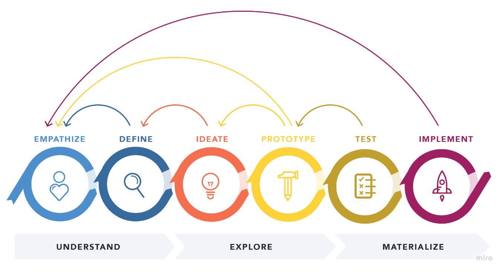
Reference: nngroup.com — Design Thinking
I applied the Design Thinking framework throughout the project — moving from empathy and research through ideation and prototyping to validated solutions. Each iteration was informed by real user feedback, ensuring that design decisions were grounded in evidence rather than assumption.
The "Our Mentors" page presented mentors with insufficient detail. Career history, skills, and personality were largely absent, leaving users unsure who to connect with — or even how to view a full profile.
Users found it difficult to grasp how the mentorship program worked, what the benefits were, what would be expected of them, and whether they could have any say in choosing their mentor.
I conducted user research to uncover the real friction points — not just the surface-level ones. This included reviewing how comparable platforms structured their mentor information and communicated their value propositions.
Through competitive analysis, user surveys, and moderated usability sessions, I built a clear picture of what users expected, what was missing, and what would give them confidence to apply.
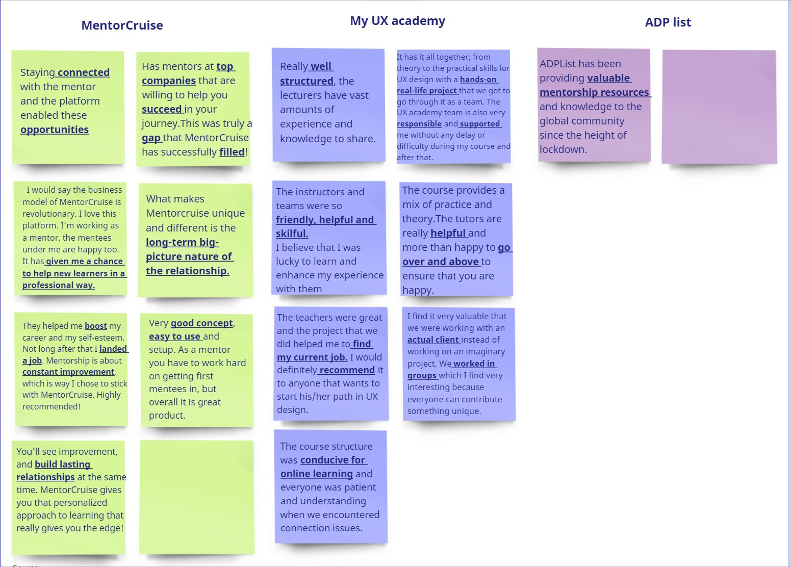
I analysed three direct competitors — MentorCruise, My UX Academy, and ADP List — to identify design patterns that build user trust, support mentor discovery, and clearly communicate program value.
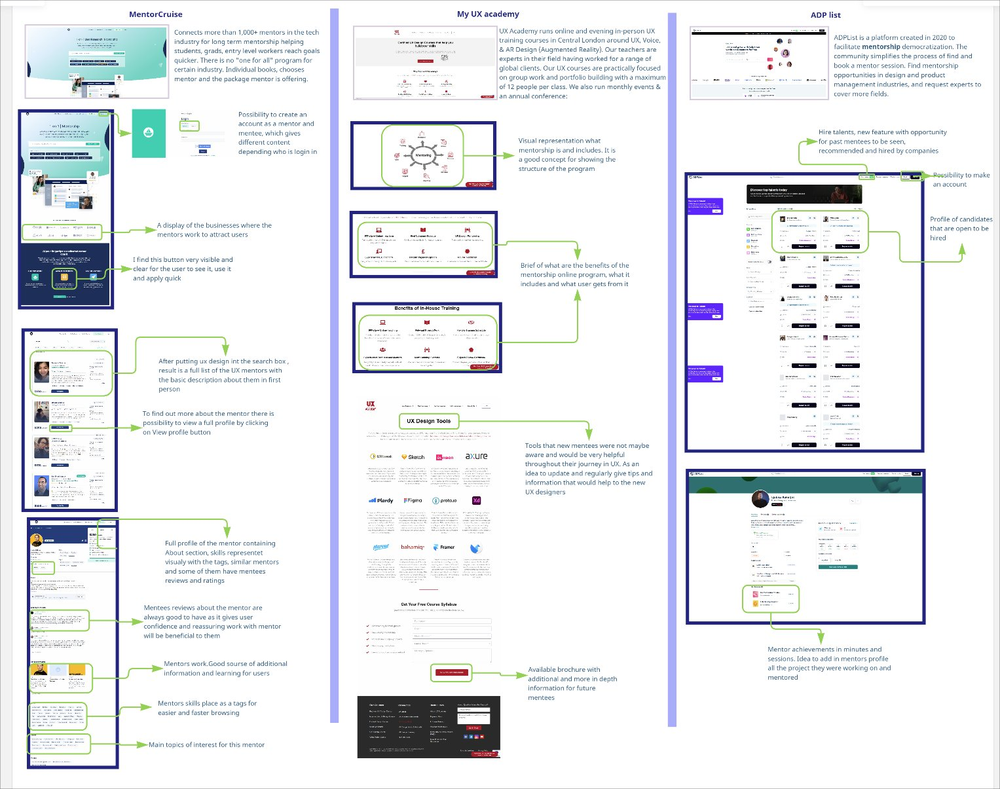
Clear mentor/mentee distinction, visible CTAs, and detailed profiles with mentee reviews create a high-trust environment. Customisable packages signal flexibility and personalisation.
Specialised UX focus with a practical, portfolio-driven curriculum. Blended online and in-person offerings signal credibility and accessibility.
Visually rich mentor listings filtered by skill, with prominent mentee reviews. The layout makes it easy to evaluate a mentor's fit at a glance.
Users need credible mentor information and visible social proof before they'll commit to applying. Platforms that surface this clearly see significantly stronger conversion from visitor to applicant.
The majority of survey respondents had not previously joined a mentorship program — not due to lack of interest, but limited awareness of the available options. Once introduced to UX Tree, participants responded positively, expressing confidence that mentorship could accelerate their career growth.
Respondents prioritised mentors with strong industry experience, senior-level expertise, and clear communication skills. They wanted mentorship to support practical skills: user research, usability testing, portfolio development, and career direction.
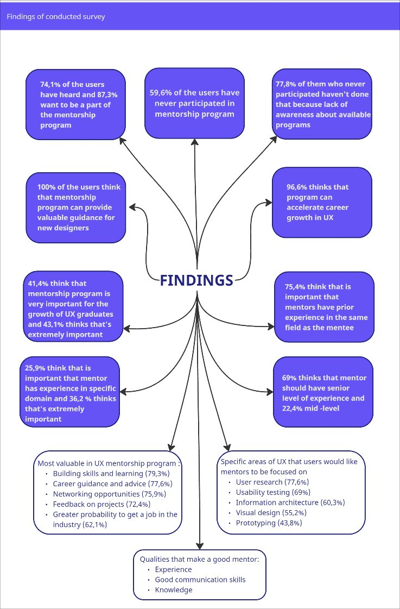
I ran a moderated usability study covering three key tasks: locating information about the mentorship program, finding a mentor's full profile, and accessing the application form. The sessions surfaced recurring confusion around navigation labels and homepage messaging — users weren't sure where to click or what the platform was for.
Improvements focused on clearer navigation labels, a restructured mentor profile layout, and a prominent "Our Mentors" call-to-action on the homepage.
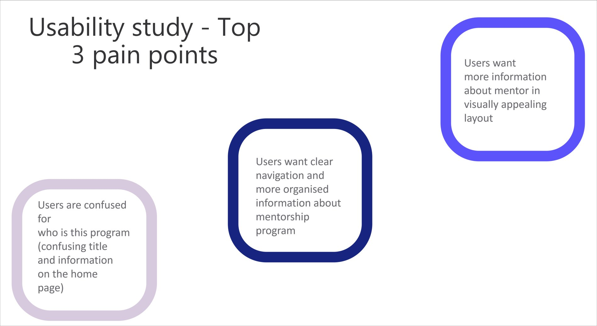
Insights from the survey and usability study were synthesised using affinity diagrams and empathy maps. Two personas emerged, representing the platform's primary user groups and providing a consistent decision-making lens throughout the design process.
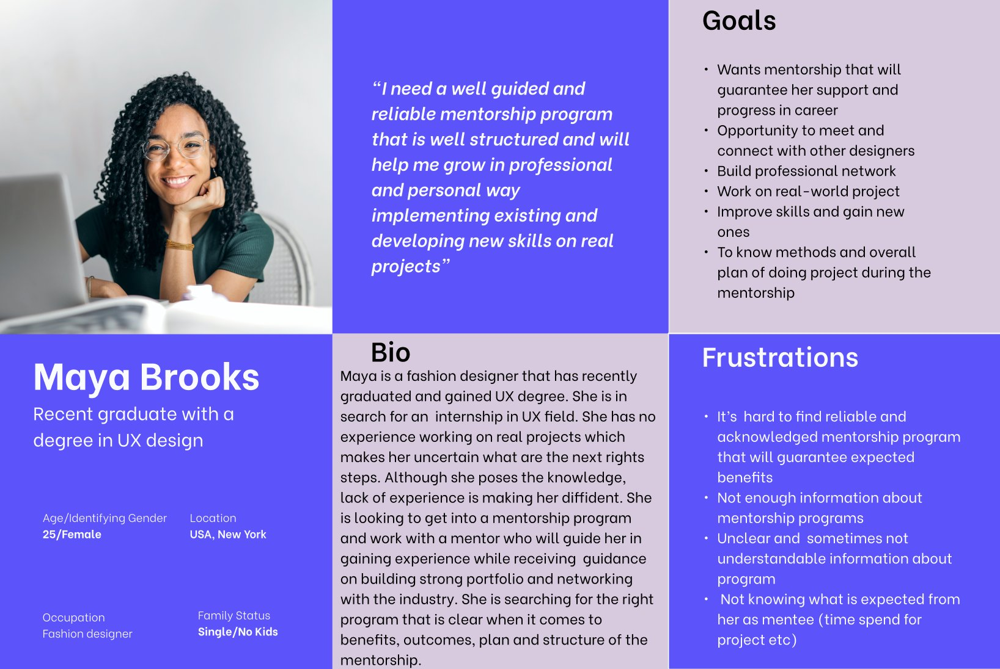
Maya needs comprehensive, clearly communicated information about the mentorship program before she'll feel confident applying. She wants to understand the format, the commitment, and what she'll actually gain.
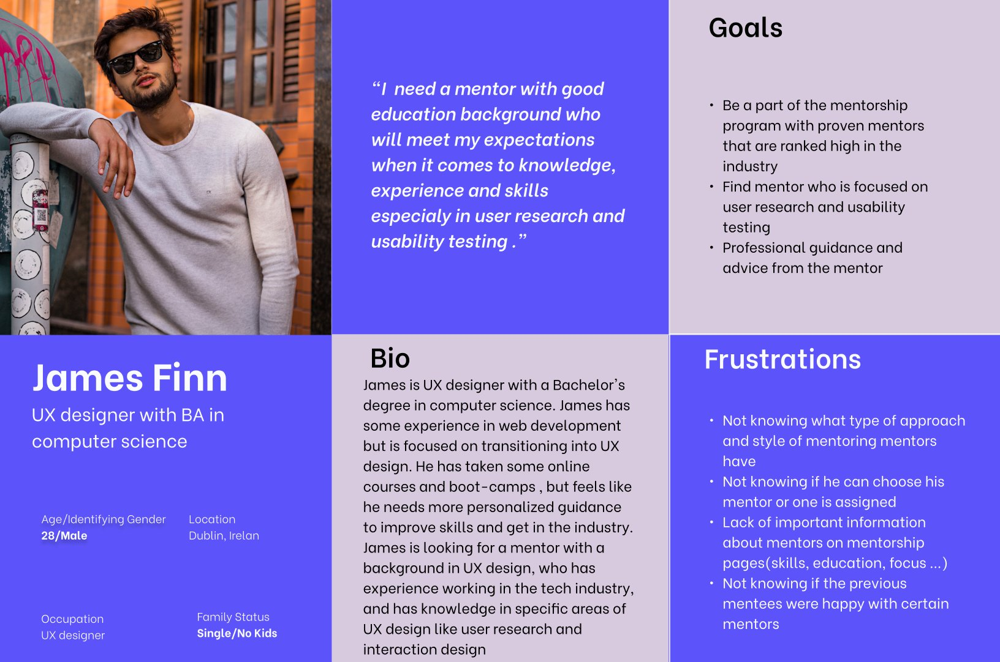
James wants to evaluate a mentor's education, work history, and expertise before committing. He's specifically looking for someone strong in user research and usability testing to support his transition into UX.
Both personas pointed to the same core gap on the Mentor page: not enough detail to make an informed, confident decision. This became the anchor for the redesign.
James, a UX designer transitioning from a computer science background, needs a mentor with proven expertise in user research and usability testing because he requires structured, personalised guidance to build the practical skills and confidence needed to fully transition into UX design.
With a clear problem statement and two grounded personas, I moved into ideation. I used Crazy 8 paper prototyping to rapidly explore layout directions for the Mentor page and profile view — keeping the focus on how information could be structured to reduce friction and increase confidence.
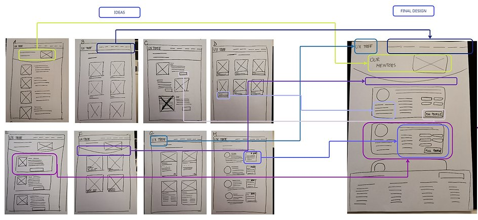
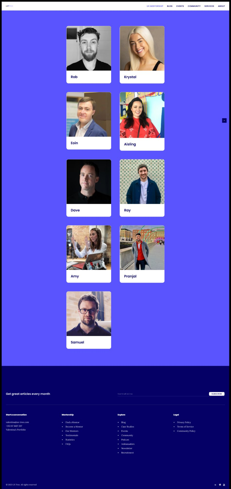
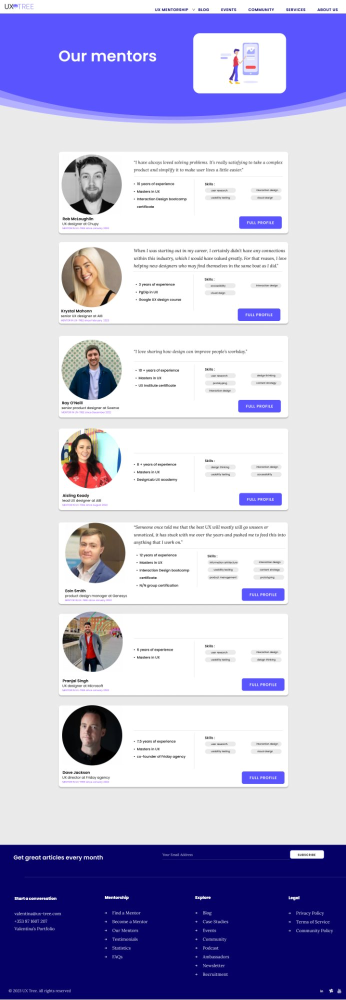
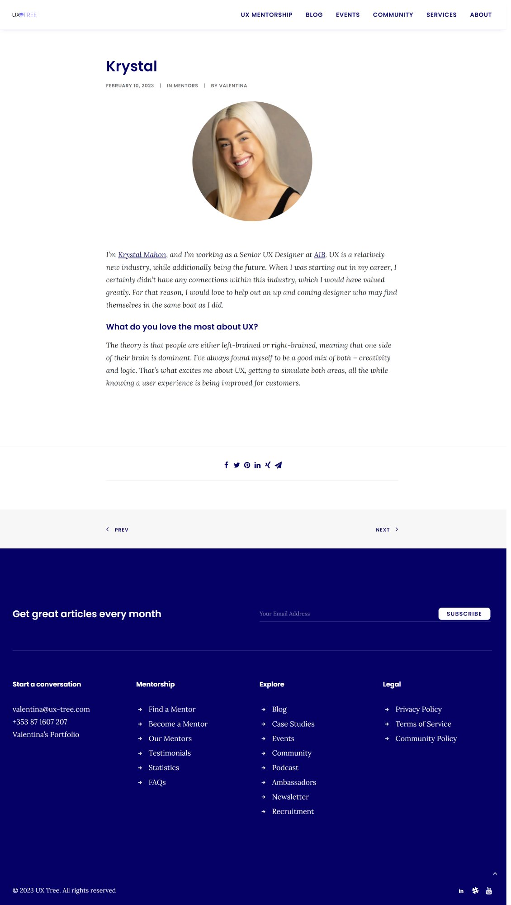
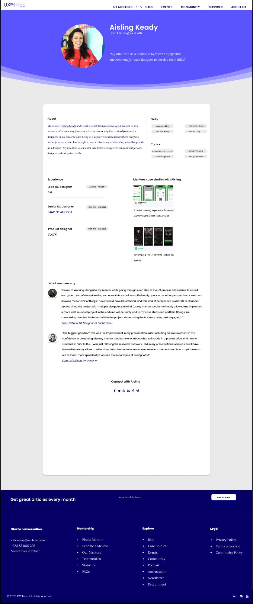
An unmoderated usability test was run in Maze with six early-stage UX designers. Participants were asked to navigate to a mentor's full profile and share qualitative feedback on the layout and content.
While all three tasks were completed successfully, the feedback surfaced clear improvement areas for the next iteration.
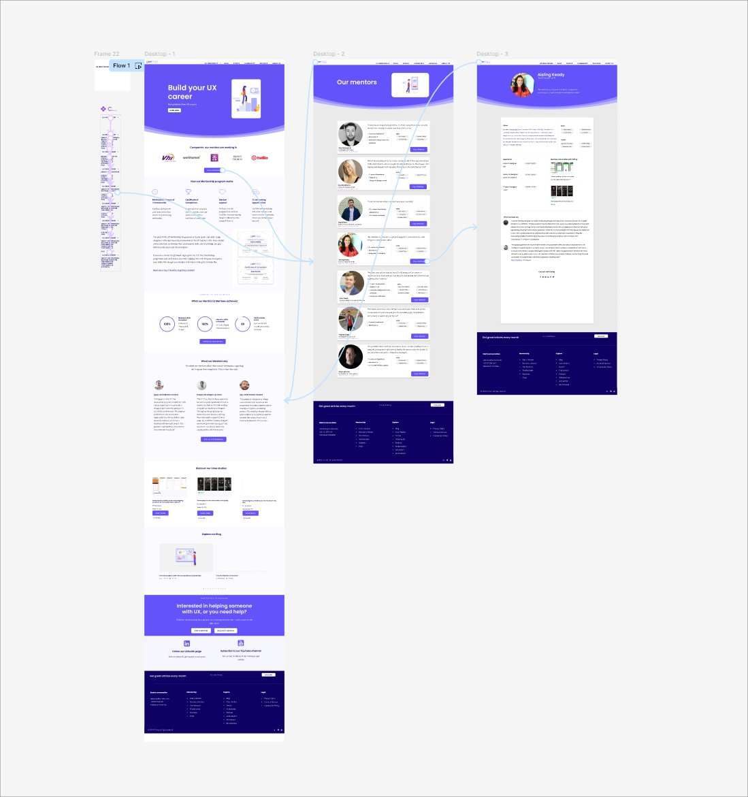
of users spent too long on individual screens
average misclick rate across tasks
participants completed all assigned tasks
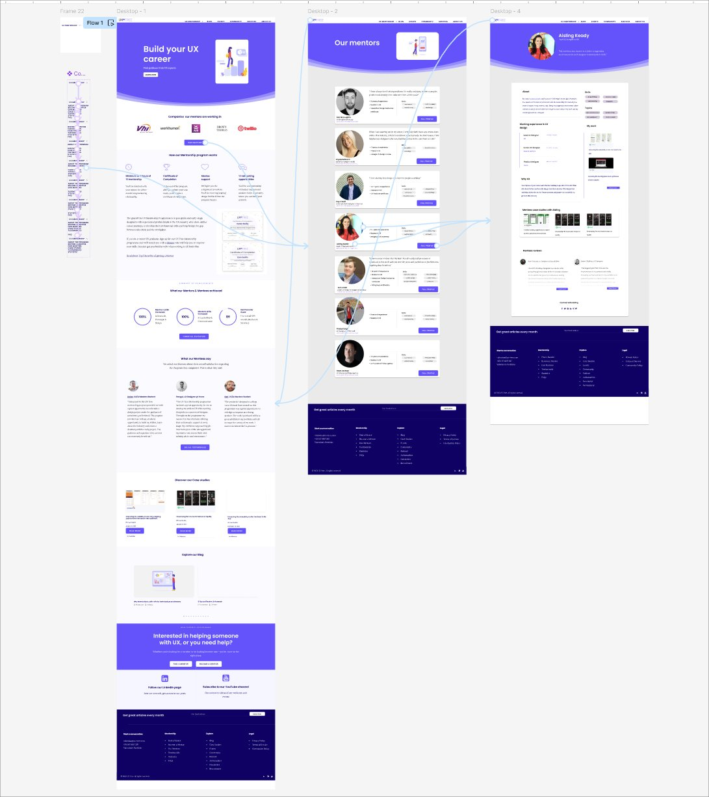
A significant finding emerged beyond the Mentor page: the homepage was inadvertently communicating that UX Tree was for experienced designers. Early-career users — the actual target audience — felt the program wasn't meant for them.
Renaming the hero headline to "Build your UX career" and refining the supporting copy immediately improved comprehension during testing. Additional structural changes included:
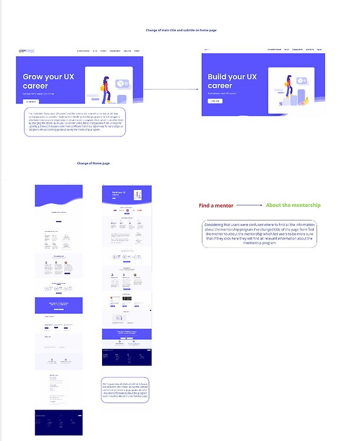
Sitting with users early in the process — before designing anything — saved significant rework and led to solutions grounded in real behaviour.
Information architecture choices directly affected whether users felt confident or confused. How content is organised matters as much as how it looks.
Improved mentor profiles — with consistent hierarchy, skill tags, and reviews — increased perceived credibility and user confidence to apply.
Transparent messaging about program expectations and mentor matching removed friction. When users understand what they're signing up for, they're more likely to act.
Each round of testing revealed something the previous iteration missed. Shipping fast and learning quickly is only valuable when feedback is applied with discipline.
Validate the latest design iteration with a fresh cohort of early-stage UX designers to confirm improvements and surface any remaining friction points.
Audit and refine the experience across all screen sizes, ensuring navigation, mentor cards, and application flows work seamlessly on mobile.
Implement event tracking to monitor how users navigate the redesigned pages, identify drop-off points, and prioritise future improvements with data.
Establish an ongoing mechanism for collecting mentee and mentor feedback post-launch to adapt the experience as the community grows.
Develop additional resources — FAQs, onboarding guides, and program explainers — to support mentees at every stage of their journey.